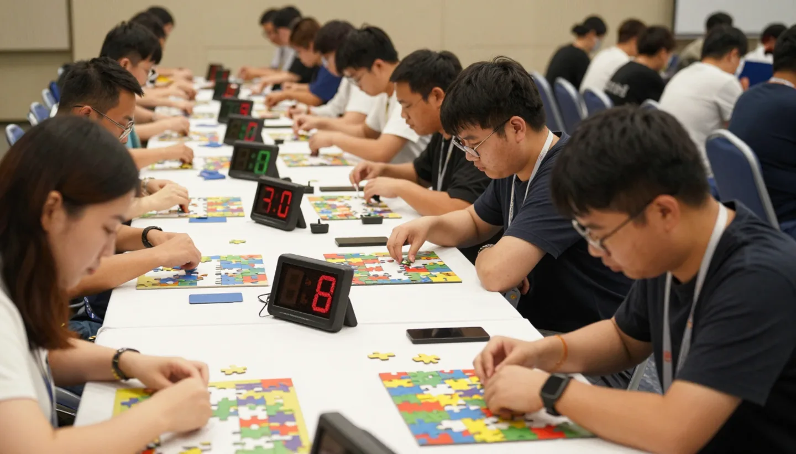
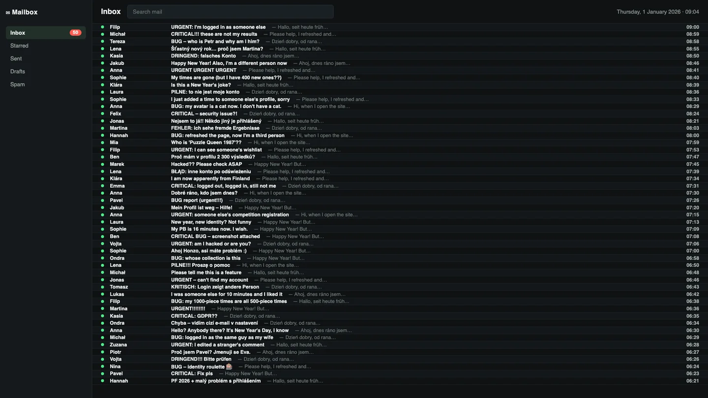

TECHMEETUP CONFERENCE · 20 NOV 2026
BUILDING
MODERN APIS
IN PHP
// 2026 edition — our stack, why I love it, and what it cost me
JAN MIKEŠ · JANMIKES.CZ

LIVE CODING
LET'S BUILD
AN API.
THE 2026 WAY.
well. sort of.
The million-dollar prompt
IT WORKS.
21 tests ✓ · PR #477 ✓ · 829 lines · 5 min 18 s
cost: $2.77 · revenue: $0.00
THE INTERESTING
PART ISN'T
THE AI.
it's why it only took five minutes.
EVERYTHING TODAY IS REAL
MYSPEEDPUZZLING
the world's largest collection of speed puzzling results and puzzle database

github.com/MySpeedPuzzling/myspeedpuzzling.com
Speed puzzling is a sport

yes, people solve jigsaws against a timer. competitively.
OUR STACK
PHP 8.5 # yes, still Symfony 8 API Platform 5 # without Doctrine CRUD Postgres 18 # 436 hand-written queries Messenger # commands, everywhere FrankenPHP # worker mode
→ not "best practice". our stack — and why I love it.
⚠ DISCLAIMER
HIGHLY
OPINIONATED.
who knows me, knows: I'm obsessed with CQS.
reads and writes are different models. always.
THE PROMISE
YOU'LL LEAVE
WITH 3 THINGS
- 1.the resource is not your entity
- 2.scenarios and read models
- 3.worker mode: how fast, and how it bites
ACT 1
THE API WAS
THE EASY PART
TIMELINE
→ the API arrived 2 years 4 months after day 1
AUGUST 2024
$ git log --reverse -- src/Controller/Api Aug 2024 Dummy endpoint
→ the most honest commit message I've ever written
AUTHENTICATION, V0
GET /api/…?token=8f3a91c…
→ security through optimism
FEB 2026
A REAL API.
IN ONE DAY.
with Claude. late — and cheap. why?
HOUR 1 · PLAIN SYMFONY APP → API
$ composer require api
config/routes/api_platform.php
$routes->import('.', 'api_platform')->prefix('/api');
→ one command. one route import.
HOUR 1 · THE WHOLE CONFIG
config/packages/api_platform.php · trimmed
'mapping' => ['paths' => ['%kernel.project_dir%/src/Api']], 'formats' => ['json' => ['application/json']], 'error_formats' => ['problem' => ['application/problem+json']], 'name_converter' => 'serializer.name_converter.camel_case_to_snake_case', 'defaults' => ['stateless' => true], 'oauth' => ['enabled' => true, 'flow' => 'authorizationCode', …],
→ done. from here on, an endpoint is just a PHP class in src/Api.
VOCABULARY · 5 WORDS FOR THE NEXT 30 MINUTES
→ by default both point at Doctrine. that default is the tutorial.
THE DEFAULT
WHAT THEY TEACH
YOU IN SCHOOL
the official docs. the courses. every blog post.
LESSON 1 · THE ENTITY IS THE RESOURCE
#[ORM\Entity] #[ApiResource] class Review { … }
→ your table is now your public API. rename a column, break a client.
api-platform.com/docs/symfony · getting started (Book, Review)
LESSON 2 · SERIALIZATION GROUPS
#[ApiResource( normalizationContext: ['groups' => ['read']], denormalizationContext: ['groups' => ['write']], )] class Book { #[Groups(['read', 'write'])] public $name; }
→ one class, many shapes, chosen by strings spread across many files
api-platform.com/docs/core/serialization · "As soon as any of the author's attributes is in the book group, the author will be embedded."
LESSON 3 · LOGIC IN A SAVE() DECORATOR
#[ORM\Entity] #[ApiResource(operations: [ new Post( processor: UserPasswordHasher::class, validationContext: ['groups' => ['Default', 'user:create']], ), ])] class User { private ?string $plainPassword = null; // not a column. lives here anyway. } # services.yaml — wraps Doctrine's persist processor $processor: "@api_platform.doctrine.orm.state.persist_processor"
→ the "register" scenario became a wrapper around save()
api-platform.com/docs/symfony/user
LESSON 4 · …THE DOCS UN-TEACH THEMSELVES
#[ApiFilter(SearchFilter::class, …)]
→ "The legacy method using the ApiFilter attribute is not recommended."
api-platform.com/docs/core/filters
TWO YEARS LATER
#[ORM\Entity] #[ApiResource] #[ApiFilter(SearchFilter::class, properties: ['player' => 'exact'])] class PuzzleSolvingTime { #[ORM\ManyToOne] #[Groups(['time:read', 'player:read'])] public Player $player; #[ORM\ManyToOne] #[Groups(['time:read'])] public Puzzle $puzzle; // → Puzzle needs groups too… #[Groups(['time:read'])] public function getSolvedTimes(): int // a repository in an entity?! }
→ all four lessons, one class. fine for a todo app.
Serialization groups
serialization groups: a 1000-piece puzzle where every piece belongs to three pictures
WHY IT HURTS IN YEAR 2
→ tutorials optimise for minute 5. you live in year 5.
SO WHY DID MINE TAKE ONE DAY?
3 DECISIONS
FROM DAY 1.
none of them made for an API.
DECISION 1
THE RESOURCE IS
NOT YOUR ENTITY
ENTITIES EXPOSED AS #[ApiResource]
of 32 API resources. every one is a plain DTO.
THE MILLION-DOLLAR ENDPOINT · THE RESOURCE
src/Api/V1/PuzzleLeaderboardResponse.php · PR #477
#[ApiResource(operations: [ new Get( uriTemplate: '/v1/puzzles/{puzzleId}/leaderboard', provider: PuzzleLeaderboardResponseProvider::class, parameters: [ /* filters — act 2 */ ], ), ])] final class PuzzleLeaderboardResponse { public function __construct( public string $puzzleId, public int $total, public bool $hasMore, /** @var list<PuzzleLeaderboardEntryResponse> */ public array $entries, ) {} }
→ one DTO = one response shape. no entity. no groups.
DECISION 2
SCENARIOS,
NOT CRUD
WHAT THE USER ACTUALLY WANTS
PATCH /competitions/42
{ "status": "published" }
POST /competitions/42/publish
→ nobody has ever opened an app to update an entity
LOOK AT THE BOX FIRST
SCREEN SCENARIO COMMAND
┌────────┐ "add my solving time" AddPuzzleSolvingTime
│ ▦▦▦▦▦▦ │ ──────────────────────▶ ──────────────▶ handler
└────────┘
called by: web UI · public API · internal API · CLI
→ puzzlers look at the picture on the box first. design from the screens.
WHY I'M NOT A FAN OF CRUD
ANEMIC ENTITY.
OVERWORKED
CLIENT.
if the entity is the resource, where do the rules live?
"I SOLVED IT!" · THE CRUD WAY
# the first try of a puzzle (the client has to move the flag itself) GET /puzzle_solving_times?player=me&puzzle=…&first_attempt=true PATCH /puzzle_solving_times/{old} {"first_attempt": false} POST /puzzle_solving_times {"first_attempt": true, "seconds": 2712, …} DELETE /wish_list_items/{id} # solved it, so not on my wishlist any more POST /notifications … # to my followers? private profile? POST /player_badges … # for me? my 3 teammates too? PATCH /puzzle_statistics/{id} … # the average time changed
→ 7 calls. 0 transactions. the rules live in the mobile app.
WHAT COULD GO WRONG?
→ one entity can't see the other rows. the rules are about the other rows.
"I SOLVED IT!" · THE SCENARIO WAY
POST /api/v1/me/solving-times
{ "puzzle_id": "…", "time": "45:12", "first_attempt": true }
→ 1 call. the rules live where every client has to pass.
src/MessageHandler/AddPuzzleSolvingTimeHandler.php · the PuzzleSolved event, 5 listeners
DECISION 3
THE READ MODEL
THE MILLION-DOLLAR ENDPOINT · THE PROVIDER
src/Api/V1/PuzzleLeaderboardResponseProvider.php · PR #477
$attempts = match ($type) {
'duo' => $this->getPuzzleSolvers->duoByPuzzleId($puzzleId),
'team' => $this->getPuzzleSolvers->teamByPuzzleId($puzzleId),
default => $this->getPuzzleSolvers->soloByPuzzleId($puzzleId),
};
$rows = $this->puzzlesSorter->groupPlayers(
$this->puzzlesSorter->sortByFastest($attempts),
);
→ Claude didn't write a single SQL query. the website already had it.
PREDICT
GET /me/results
for our top puzzler
2,327 results · 2,159 puzzles · about 2 MB of JSON
how many SQL queries would classic Doctrine CRUD fire?
MEASURED · SAME DB, SAME IMAGE
Doctrine CRUD ████████████████████████████ 9,210 queries 9,559 entities · 1,890 ms · ~40 MB read model ▏ 7 queries 0 entities · 108 ms (whole request)
→ the REST-purist version: the client does the joins. 4,400+ HTTP requests for one screen.
N+1
N+1: walking to the box for every single piece
PUTTING IT TOGETHER · THE LAYERS
→ HTTP lives in the first column only. the rest doesn't know it exists.
END TO END · READ ① THE RESOURCE
src/Api/V1/MyCollectionsResponse.php
#[ApiResource(operations: [ new Get( uriTemplate: '/v1/me/collections', security: "is_granted('ROLE_PAT') or is_granted('ROLE_OAUTH2_COLLECTIONS:READ')", provider: MyCollectionsResponseProvider::class, ), ])] final class MyCollectionsResponse { public function __construct( public string $playerId, public int $count, public array $collections, // list<CollectionResponse> ) {} }
→ the URL, who may call it, and the exact JSON shape. one file.
END TO END · READ ② PROVIDER → QUERY
src/Api/V1/MyCollectionsResponseProvider.php · src/Query/GetPlayerCollections.php
public function provide(…): MyCollectionsResponse
{
$playerId = /* the logged-in player */;
$collections = $this->getPlayerCollections->byPlayerId($playerId);
return new MyCollectionsResponse($playerId, count(…), array_map(…));
}
-- the query object: SQL straight into a DTO
SELECT id, name, description, visibility, created_at, player_id
FROM collection
WHERE player_id = :playerId
ORDER BY created_at DESC
→ no entity. no hydration. the website uses the same query.
END TO END · WRITE ① THE INPUT
src/Api/V1/CreateCollectionInput.php
#[ApiResource(operations: [ new Post( uriTemplate: '/v1/me/collections', security: "is_granted('ROLE_PAT') or is_granted('ROLE_OAUTH2_COLLECTIONS:WRITE')", output: CollectionResponse::class, processor: CreateCollectionProcessor::class, ), ])] final class CreateCollectionInput { #[Assert\NotBlank] #[Assert\Length(max: 100)] public string $name = ''; #[Assert\Length(max: 500)] public ?string $description = null; }
→ body validation on the input. invalid? a 422 before any of my code runs.
END TO END · WRITE ② THE PROCESSOR
src/Api/V1/CreateCollectionProcessor.php
$playerId = $user->getPlayer()->id->toString();
if ($profile->activeMembership === false) {
throw new AccessDeniedHttpException('Active membership is required…');
}
$collectionId = Uuid::uuid7()->toString();
$this->messageBus->dispatch(new CreateCollection(
collectionId: $collectionId,
playerId: $playerId,
name: $data->name, …
));
return new CollectionResponse(collectionId: $collectionId, …);
→ the processor is an adapter. the command has no idea HTTP exists.
ID BEFORE DISPATCH
$id = Uuid::uuid7(); # new $id = Uuid::uuid5($ns, $idempotencyKey); # retry → same id
→ the URL exists before the command runs. a retry returns the same resource.
END TO END · WRITE ③ COMMAND → HANDLER
src/MessageHandler/CreateCollectionHandler.php
public function __invoke(CreateCollection $message): void
{
$player = $this->playerRepository->get($message->playerId);
if ($this->collectionRepository->findByNameAndPlayer(…) !== null) {
throw new CollectionAlreadyExists(…);
}
$this->collectionRepository->save(new Collection(
id: Uuid::fromString($message->collectionId),
player: $player, name: $message->name, …
));
}
→ the same handler serves the website form, the API and the CLI
→ that was team A: the clean way. five classes for one write.
TEAM B · THE PRAGMATIC WAY
Fantasy Academy · api/src/Message/Subscription/CreateCheckoutSession.php
#[Post( uriTemplate: '/subscription/checkout', output: CheckoutSessionResponse::class, messenger: 'input', )] readonly final class CreateCheckoutSession implements UserAware { use WithUserId; public function __construct( #[Assert\Choice(['monthly', 'yearly'])] public string $plan, private ?Uuid $userId = null, ) {} }
→ no processor. no mapping. the message is the resource.
HOW DOES IT RETURN A RESPONSE?
vendor/api-platform/core/src/Symfony/Messenger/Processor.php
$handledStamp = $envelope->last(HandledStamp::class);
if (!$handledStamp instanceof HandledStamp) {
return $data; // async: nothing handled yet
}
return $handledStamp->getResult();
→ the handler's return value is the response. async? send a 202.
WHERE DOES $userId COME FROM?
$user = $this->security->getUser();
assert($user instanceof ApiUser);
new CreateCollection(
playerId: $user->getPlayer()…
);
if ($message instanceof UserAware
&& !$envelope->last(ReceivedStamp::class)) {
$message = $message->withUserId(
$this->security->getUser()…
);
}
→ explicit beats magic… until you do it by hand in 426 files
IS IT WORTH THE EXTRA LAYER?
| A · processor | B · message = resource | |
|---|---|---|
| files per write | ~5 | ~3 |
| mapping code | yes | none |
| API contract | decoupled | = the command |
| go async later | free | changes the API |
| $userId | explicit | automatic |
WHAT DO
YOU THINK?
hands up: team A … team B …
MY RULE · OPINION
OWN EVERY CLIENT?
THE MESSAGE CAN BE
THE CONTRACT.
→ strangers integrate with you? put a layer between.
Fantasy Academy: one frontend, same repo → B. MySpeedPuzzling: public API, 4 callers → A.
ACT 2
PRODUCTION-
GRADE
FILTERING + VALIDATION FOR FREE
src/Api/V1/PuzzleLeaderboardResponse.php · PR #477
'type' => new QueryParameter(
key: 'type',
constraints: [new Choice(choices: ['solo', 'duo', 'team'])],
),
'country' => new QueryParameter(
key: 'country',
castFn: [QueryParameterCaster::class, 'lowercase'],
),
'limit' => new QueryParameter(
key: 'limit',
schema: ['type' => 'integer', 'maximum' => 100, 'default' => 20],
constraints: [new Range(min: 1, max: 100)],
),
→ declared, not coded. and it lands in the OpenAPI docs.
PAGINATION
src/Api/V1/PuzzleLeaderboardResponseProvider.php · PR #477
$total = count($rows);
$offset = ($page - 1) * $limit;
$entries = array_slice($rows, $offset, $limit);
// → { "page": 1, "limit": 20, "total": 37, "has_more": true }
→ honest: hand-made. no Doctrine, so no Doctrine paginator.
IT EVEN SAYS NO TO ME
$ curl '…/puzzles/{id}/leaderboard?limit=1000'
HTTP/1.1 422 Unprocessable Entity
Content-Type: application/problem+json
{
"status": 422,
"detail": "limit: This value should be between 1 and 100.",
"violations": [ { "propertyPath": "limit", … } ]
}
BODY VALIDATION · WHEN ATTRIBUTES AREN'T ENOUGH
src/Api/V1/CreateSolvingTimeInput.php
#[Assert\Regex('/^\d{1,2}:\d{2}(:\d{2})?$/', message: 'Time must be in format HH:MM:SS or MM:SS')] public string $time = ''; #[Assert\Positive] public ?int $piecesPlaced = null; // an unfinished competition result #[Assert\Callback] public function validateTime(ExecutionContextInterface $context): void { if ($this->piecesPlaced === null && trim($this->time) === '') { $context->buildViolation('This value should not be blank.') ->atPath('time')->addViolation(); } }
→ rules across fields live on the input too. same 422, same violations format.
THE LIMIT OF VALIDATION
SOME RULES CAN'T
BE CHECKED AT
THE DOOR
"one first try per puzzle" needs the database. and a race beats any form.
THROWN IN THE DOMAIN
src/MessageHandler/AddPuzzleSolvingTimeHandler.php
if ($message->firstAttempt) {
$firstTry = $this->firstTryAssessor->assess(…);
if ($firstTry->blocks($message->firstTryResolution)) {
throw new FirstTryAlreadyTaken($firstTry);
}
}
// src/Exceptions/FirstTryAlreadyTaken.php
final class FirstTryAlreadyTaken extends \Exception
→ no HTTP. no status code. just the business saying no.
TRANSLATED AT THE EDGE
src/Api/V1/CreateSolvingTimeProcessor.php
try {
$this->messageBus->dispatch(new AddPuzzleSolvingTime(…));
} catch (HandlerFailedException $exception) {
if ($exception->getPrevious() instanceof FirstTryAlreadyTaken) {
throw FirstTryConflictResponse::from(…); // → 422 + a helpful detail
}
…
}
// src/Controller/PuzzleAddController.php: the SAME exception
if ($realException instanceof FirstTryAlreadyTaken) {
$form->addError(new FormError(…)); // → a red form error
}
→ one domain exception. two translations. each door speaks its own language.
WHAT THE CLIENT SEES
$ curl -X POST …/api/v1/me/solving-times -d '{ …, "first_attempt": true }'
HTTP/1.1 422 Unprocessable Entity
Content-Type: application/problem+json
{
"status": 422,
"detail": "A first attempt of this puzzle is already recorded for you
(result 0199…). Send firstAttempt=false, or remove the
flag from that result first."
}
→ an error message is UX. tell them how to fix it.
TEAM B? ONE LINE.
#[Post( messenger: 'input', exceptionToStatus: [FirstTryAlreadyTaken::class => 422], )] # or globally: api_platform.exception_to_status
→ API Platform unwraps HandlerFailedException for you. cheap, but a generic message.
OPENAPI · DOCS THAT CAN'T LIE
src/Api/V1/CreateSolvingTimeInput.php
openapi: new OpenApiOperation(
description: 'Linking the time to an event (all optional): round_id …',
parameters: [new Parameter(name: 'Idempotency-Key', in: 'header', …)],
responses: [
'422' => new OpenApiResponse(description: 'Invalid input, a first attempt
already recorded, or an Idempotency-Key already used…'),
'404' => new OpenApiResponse(description: 'round_id, competition_id or
series_id is unknown… nothing is saved.'),
],
),
→ schemas come from the DTOs. the edge cases live next to the code that throws them.
CONTRACT FIRST
examples/Demo/LeaderboardProvider.php · this talk's repo
for ($rank = $first; $rank < $first + $limit; $rank++) {
$items[] = new LeaderboardEntry(
rank: $rank,
playerName: 'Puzzler #' . $rank, // fake
timeSeconds: (int) ($pieces * 2.4) + $rank * 7,
);
}
return new LeaderboardResponse(items: $items, page: $page, …);
→ the OpenAPI spec exists before the real data. mobile starts on day 1.
ONE CODEBASE · 3 KINDS OF CALLER
OAuth2 apps scopes → roles ─┐ personal tokens Authorization: Token msp_pat_… ─┼─▶ ApiUser ─▶ same commands AI agents internal API, ~90 scenario endpoints ─┘
→ who you are is a firewall problem. what you do is a command.
SECURITY ① WHO ARE YOU?
config/packages/security.php
'api' => [
'pattern' => '^/api/v1/',
'stateless' => true, // no session, no cookie
'oauth2' => true, // league/oauth2-server-bundle
'custom_authenticators' => [PatAuthenticator::class],
],
'access_control' => [
['path' => '^/api/v1/me', 'roles' => [PatUser::ROLE, OAuth2User::ROLE]],
['path' => '^/api/v1/players/.*/results', 'roles' => [OAuth2Scope::ResultsRead->role()]],
],
→ scopes become roles. a whole path is closed even if an endpoint forgets.
SECURITY ② WHAT MAY YOU DO?
// 1. the operation: is this token allowed here at all? security: "is_granted('ROLE_PAT') or is_granted('ROLE_OAUTH2_COLLECTIONS:WRITE')", // 2. the processor: the business rule → 403 if ($profile->activeMembership === false) { throw new AccessDeniedHttpException('Active membership is required…'); } // 3. the provider: be nice to the database → 429 if (!$this->apiPuzzleSearchLimiter->create($key)->consume()->isAccepted()) { throw new TooManyRequestsHttpException($retryAfterSeconds, …); }
→ token scope, business permission, rate limit. three questions, three places.
"IS SPEED PUZZLING
A REAL THING?"
I can see it on your faces.
WORLD RECORD MATH
SPEAKING OF
SPEED.
"PHP IS SLOW."
— every conference since 2008
CLASSIC PHP · EVERY REQUEST
request ─▶ boot kernel ─▶ build container ─▶ routing
─▶ API Platform metadata ─▶ your code ─▶ response
─▶ throw it all away
request ─▶ boot kernel ─▶ build container ─▶ …
Classic PHP
classic PHP. every. single. request.
FRANKENPHP
WORKER MODE
boot kernel ─▶ build container ─▶ routing # once
▼
request ─▶ your code ─▶ response ─▶ reset
request ─▶ your code ─▶ response ─▶ reset
request ─▶ …
PREDICT
GET /api/v1/me
classic 23.6 ms · 167 req/s
worker ?
REVEAL · p50 LATENCY
classic ████████████████████████ 23.6 ms worker ███ 3.0 ms
167 → 2,368 requests per second
ALL 8 ENDPOINTS · REQUESTS PER SECOND
| endpoint | classic | worker | |
|---|---|---|---|
| ping (no DB) | 951 | 5,673 | 6.0× |
| mock leaderboard | 652 | 4,675 | 7.2× |
| /me | 167 | 2,368 | 14.2× |
| openapi.json | 30 | 137 | 4.6× |
| puzzle detail | 113 | 373 | 3.3× |
| puzzles, 100 | 35 | 104 | 3.0× |
| /me/results, 2 MB | 22 | 39 | 1.8× |
→ framework boot is a fixed tax. a heavy query is still a heavy query.
PRODUCTION · LAST 30 DAYS · ~10M REQUESTS
→ that's worker mode. in production. right now.
PHP is alive
PHP in 2026: "dead" since 2008. 23 ms p50.
BUT.
NOVEMBER 2025 · A BIG CINEMA CHAIN HERE
"The website logged fans into other people's accounts."
CineStar, the Traitors finale ticket rush · nafilmu.cz, refresher.cz (paraphrased and translated)
→ I laughed. how can that happen to a company that size?
31 DEC 2025 · NEW YEAR'S EVE
02:29 commit "FrankenPHP Worker mode fix" 02:33 deploy ✗ failed 02:38 deploy ✗ failed 03:09 deploy ✗ failed 03:31 Re-run 03:35 deploy ✓ live # and I went to sleep
Deploy and go to sleep
03:35 · WORKER MODE: ON · GOOD NIGHT
what could possibly go wrong?
The inbox on New Year's morning

1 JAN 2026 · 50 unread
One sign-on for everyone

perfect single sign-on. one sign-on. for everyone.
HOW LONG UNTIL IT WAS REALLY FIXED?
~09:00 worker mode off, by hand on the server 1 Jan 15:16 fix #1: reset via reflection on a private property 3 Jan 17:07 fix #2: the real one
THE LESSON
worker mode doesn't make your code stateful. it reveals it. → reset at the START of every request → 52 services implement ResetInterface → stateless: true, everywhere → the rule lives in CLAUDE.md
WHO KEPT
THE USER
IN MEMORY?
a third-party bundle. hold that thought.
ACT 3
LIVING
WITH IT
OBSERVABILITY
MEASURE EVERYTHING.
ALERT ON ALMOST NOTHING.
THE ONE PERFORMANCE ALERT
p90(span.duration) > 500 ms for 30 min
EXCLUDING
GET result_image # slow by design
POST stripe_webhook # Stripe's timing
GET sitemap # bots
GET checkout_success # waits for Stripe
→ every alert must be actionable at 3 a.m.
SEP 2026 · SENTRY WEB-B4
"THE SEARCH
FEELS SLOW."
every header search: 135 ms on average. not broken. just… meh.
THE TRAP I WALKED INTO
src/Query/SearchPuzzle.php
WHERE name ILIKE :searchFullLikeQuery -- trigram index ✓ (since January) OR identification_number ILIKE :searchFullLikeQuery -- no index OR ean ILIKE :eanSearchFullLikeQuery -- no index
→ one OR arm without an index = a full table scan. every search.
THE FIX · ONE MIGRATION
migrations/Version20260918131133.php · commit 6500b1a88
CREATE INDEX custom_puzzle_identification_number_trgm
ON puzzle USING GIN (identification_number gin_trgm_ops);
CREATE INDEX custom_puzzle_ean_trgm
ON puzzle USING GIN (ean gin_trgm_ops);
AND THE TEST DIDN'T MOVE
tests/Controller/Api/V1/PuzzleSearchEndpointTest.php · untouched by the fix
$browser->request('GET', '/api/v1/puzzles', ['query' => 'RB-500-001']);
$this->assertResponseIsSuccessful();
$this->assertSame([PuzzleFixture::PUZZLE_500_01], $this->ids(…));
→ the test pins the request and the response. not the implementation.
→ so I can change exactly one thing underneath, and know nothing else moved.
THE SCARIEST FAILURE
IS A CRON THAT
SILENTLY STOPPED
three weeks ago. ~50 cron check-ins + a dead-man's switch.
API USAGE · WHY NOT PROMETHEUS?
token × endpoint × status = cardinality 💥 kernel.request start timer kernel.terminate 1 Redis write # after the response is sent every 5 min flush → Postgres
→ 25–446 requests a day. not big traffic. good traffic.
AI AGENTS ARE API CLIENTS TOO
$ curl -X POST …/internal-api/series/{seriesId}/publish [internal_api_audit] Internal API write: POST /internal-api/series/…/publish answered 200 { actingPlayerId, targetIds, createdId }
→ ~90 scenario endpoints, an OpenAPI file, and an audit log
REMEMBER THE
MILLION-DOLLAR
ENDPOINT?
WHY IT TOOK 5 MINUTES
→ a good architecture for humans is a good prompt for agents
GAINS / LOSSES
isolated domain one command, 4 callers SQL reads, no N+1 no serialization groups docs that can't lie
more files per endpoint DTO → DTO mapping 436 raw SQL queries hand-made pagination worker-mode discipline
CLOSE
DECISIONS
I'D UNDO
WHO KEPT THE USER IN MEMORY?
THE AUTH0
BUNDLE.
unmaintained. I ended up running dev-main from my own fork.
The wet-ink signature
2026: getting my own users' password hashes back
THE MIGRATION · 30 JUL 2026
→ don't rent identity: easy to move in, expensive to move out
DECISION I'D UNDO #2
WAITING 2 YEARS
TO DO THIS.
once your endpoints are just classes… it's addictive.
AS PROMISED
3 THINGS
- 1.the resource is not your entity
- 2.scenarios and read models
- 3.worker mode: fast — so reset
WHAT I KEEP HEARING
→ every developer I showed this to. every single one.
MY ONE ASK
SPREAD
THE WORD.
API Platform is far more powerful than its tutorials.
maybe the most underrated reason to love PHP in 2026.
ESTIMATED REVENUE:
$0.00
but the API is real, the 12,500 puzzlers are real — and every line is open source. steal it.
THANK YOU
MySpeedPuzzling
benchmarks, numbers and code links: the companion page · janmikes.cz